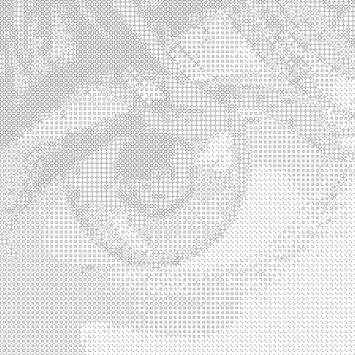

I am an aspiring architecture student with a strong passion for parametric design. I enjoy experimenting with Grasshopper to generate complex forms and optimize design processes, allowing me to achieve both efficiency and creativity in my projects. My dedication to architecture drives me to push boundaries and give my utmost effort in every piece of work.
YAL-OW MAIN COMMITTEE
DPA BIM SPECIALIST
DPA BIM TRAINEE
2026 - CURRENT
2026 - CURRENT
2025 - 2025